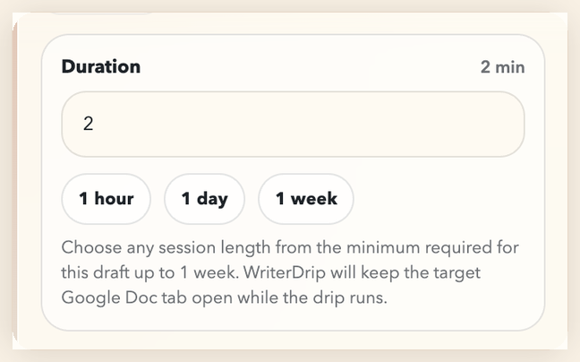
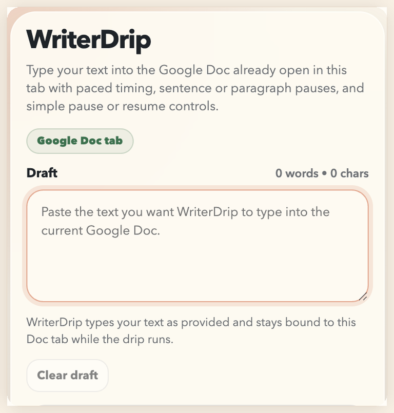
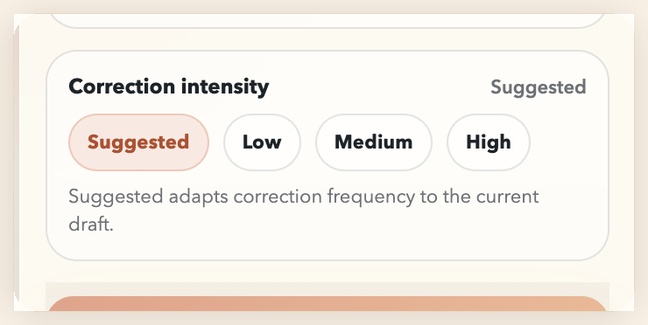

Flexible timing
Choose a session that fits the draft.
Use the draft-sized minimum, type a custom duration, or jump to quick presets like one hour, one day, or one week.

Free open-source Chrome extension for Google Docs
WriterDrip types user-provided text into the Google Doc already open in your browser over a chosen timeline, with pause or resume controls, local-only behavior, and draft-aware correction intensity.

Looking for Dripwriter?
If you searched for Dripwriter, WriterDrip gives you a similar paced typing workflow for Google Docs without a paywall. WriterDrip is an independent project and is not affiliated with Dripwriter.
Flexible timing
Use the draft-sized minimum, type a custom duration, or jump to quick presets like one hour, one day, or one week.

Draft-aware corrections
Keep it on Suggested for the draft-aware default, or switch to Low, Medium, or High when you want more manual control.

Install and use
chrome://extensions, enable Developer mode, then click
Load unpacked and select the folder that contains manifest.json.
FAQ
No. WriterDrip works against the Google Doc already open in your browser and does not require OAuth.
Yes. WriterDrip stays bound to the original Google Doc tab while you use other tabs, as long as your browser and computer stay on.
While a drip is actively running, yes. WriterDrip runs locally in your browser, so your computer must stay awake and the original Google Doc tab must stay open. If you need a break, pause the run and resume later from the same Google Doc.
Yes. The project is MIT-licensed, open source, and available from the public GitHub repository.
No. WriterDrip types into the live editor, but Google still controls how revision history is grouped and displayed.